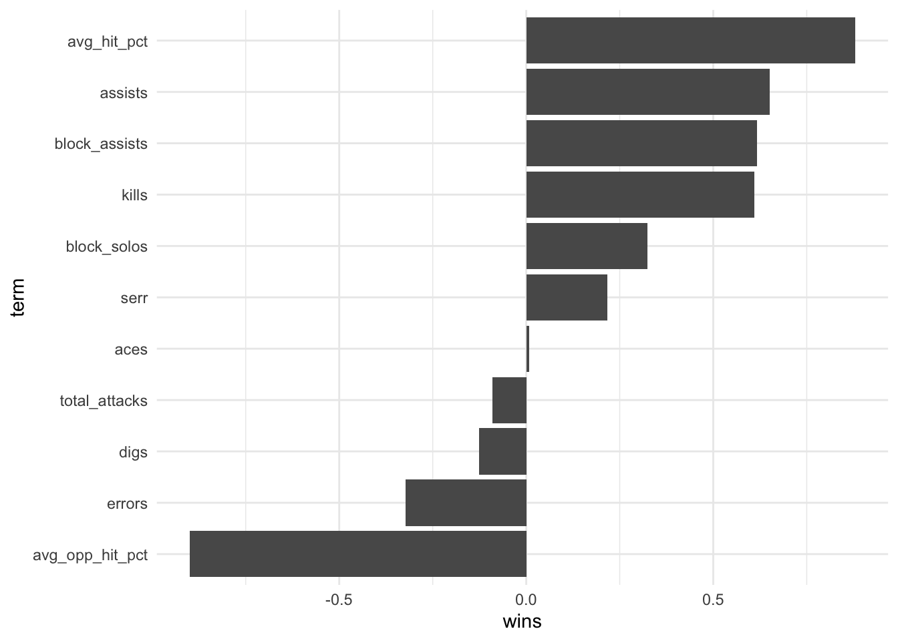
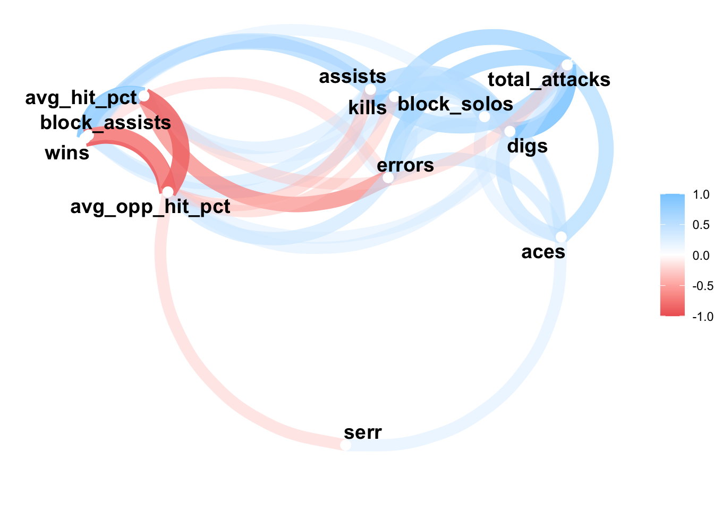

library(tidyverse)
library(corrr)
library(here)TIL: Calculating correlations with corrr
til
data analysis
exploratory analysis
data visualization
Use the corrr package to calculate and visualize correlations
Today I learned calculating, visualising, and exploring correlations is easy with the corrr package.
In the past, I would rely on Base R’s stats::cor() for exploring correlations. This function is a powerful tool if you’re looking to do additional analysis beyond investigating correlation coefficients. stats::cor() has its pain points, though. Sometimes, I just want a package to explore correlations quickly and easily.
I recently stumbled across the corrr package. It met all the needs I listed above. The purpose of this post is to highlight what I’ve learned while using this package, and to demonstrate functionality I’ve found useful. To get started, let’s attach some libraries and import some example data.
The data
In this post, I explore correlations within NCAA Big Ten Women’s volleyball data. Living in Nebraska, you can’t but not enjoy the stellar play of Husker volleyball1; It’s also a very big deal around here2. So, I saw it fitting to explore this data and take this opportunity to learn more about the game.
The data is aggregated match data from the 2021 season up to the middle of the 2023 season. Match data only includes Big Ten Conference teams. As of this writing, the data has been updated up to 2023-10-14.
Let’s import this data. readr::read_csv() imports the data used in this post.
data_vball <-
read_csv(here(
"blog/posts/2023-10-22-til-correlations-with-corrr/2023_10_14_big10_vb_game_by_game.csv"
))Rows: 14 Columns: 16
── Column specification ────────────────────────────────────────────────────────────────────────────
Delimiter: ","
chr (1): team_name
dbl (15): wins, set_wins, set_loss, s, kills, errors, total_attacks, assists, aces, serr, digs, ...
ℹ Use `spec()` to retrieve the full column specification for this data.
ℹ Specify the column types or set `show_col_types = FALSE` to quiet this message.We can view the variables within the data by running dplyr::glimpse() on data_vball.
glimpse(data_vball)Rows: 14
Columns: 16
$ team_name <chr> "Illinois Fighting Illini", "Indiana Hoosiers", "Iowa Hawkeyes", "Maryland…
$ wins <dbl> 7, 15, 8, 13, 12, 3, 7, 17, 9, 7, 13, 10, 9, 16
$ set_wins <dbl> 29, 50, 31, 42, 43, 16, 29, 51, 35, 29, 41, 38, 34, 48
$ set_loss <dbl> 36, 22, 41, 27, 28, 43, 30, 8, 30, 31, 20, 27, 29, 8
$ s <dbl> 65, 72, 72, 69, 71, 59, 59, 59, 65, 60, 61, 65, 63, 56
$ kills <dbl> 790, 948, 871, 877, 912, 674, 722, 816, 812, 743, 829, 834, 752, 779
$ errors <dbl> 341, 352, 348, 355, 372, 350, 254, 270, 290, 327, 304, 296, 298, 197
$ total_attacks <dbl> 2210, 2431, 2541, 2192, 2340, 2005, 1972, 1866, 2141, 2011, 2071, 2182, 20…
$ assists <dbl> 705, 856, 801, 799, 829, 617, 668, 755, 737, 679, 755, 772, 690, 725
$ aces <dbl> 86, 138, 116, 101, 112, 107, 84, 68, 83, 78, 59, 75, 83, 97
$ serr <dbl> 153, 158, 124, 169, 209, 168, 157, 178, 126, 126, 123, 120, 144, 144
$ digs <dbl> 867, 922, 1098, 855, 963, 812, 830, 782, 885, 839, 850, 905, 845, 803
$ block_solos <dbl> 28, 57, 22, 27, 33, 25, 19, 20, 18, 27, 44, 29, 27, 22
$ block_assists <dbl> 264, 248, 224, 321, 198, 159, 245, 268, 258, 167, 268, 248, 209, 272
$ avg_hit_pct <dbl> 0.2036471, 0.2545238, 0.2027500, 0.2519474, 0.2431579, 0.1558824, 0.241600…
$ avg_opp_hit_pct <dbl> 0.2212353, 0.1578095, 0.2385500, 0.1834737, 0.1733684, 0.2615294, 0.177000…The data contains two types of statistics: counts and calculated metrics (e.g., average hitting percentage). Variable names should be informative. However, if you’re unfamilair with some of the terminology used within volleyball, here is a good list.
Calculate correlations with corrr::correlate()
Obtaining a correlation table is easy with corrr. We just need to pipe our data to the correlate() function.
data_vball |> correlate()Non-numeric variables removed from input: `team_name`
Correlation computed with
• Method: 'pearson'
• Missing treated using: 'pairwise.complete.obs'# A tibble: 15 × 16
term wins set_wins set_loss s kills errors total_attacks assists aces serr
<chr> <dbl> <dbl> <dbl> <dbl> <dbl> <dbl> <dbl> <dbl> <dbl> <dbl>
1 wins NA 0.984 -0.902 0.0715 0.609 -0.322 -0.0912 0.651 0.00849 0.217
2 set_wins 0.984 NA -0.859 0.183 0.692 -0.265 0.0128 0.729 0.0530 0.213
3 set_loss -0.902 -0.859 NA 0.346 -0.238 0.633 0.483 -0.292 0.276 -0.122
4 s 0.0715 0.183 0.346 NA 0.813 0.731 0.953 0.777 0.627 0.156
5 kills 0.609 0.692 -0.238 0.813 NA 0.394 0.711 0.993 0.450 0.187
6 errors -0.322 -0.265 0.633 0.731 0.394 NA 0.727 0.324 0.470 0.283
7 total_a… -0.0912 0.0128 0.483 0.953 0.711 0.727 NA 0.673 0.636 -0.00449
8 assists 0.651 0.729 -0.292 0.777 0.993 0.324 0.673 NA 0.430 0.173
9 aces 0.00849 0.0530 0.276 0.627 0.450 0.470 0.636 0.430 NA 0.366
10 serr 0.217 0.213 -0.122 0.156 0.187 0.283 -0.00449 0.173 0.366 NA
11 digs -0.125 -0.0350 0.457 0.815 0.590 0.515 0.909 0.587 0.517 -0.137
12 block_s… 0.324 0.366 -0.129 0.423 0.564 0.411 0.434 0.521 0.357 0.0474
13 block_a… 0.617 0.595 -0.513 0.105 0.418 -0.300 -0.0276 0.429 -0.162 -0.0483
14 avg_hit… 0.879 0.864 -0.934 -0.210 0.336 -0.680 -0.348 0.395 -0.223 0.0162
15 avg_opp… -0.899 -0.873 0.927 0.180 -0.355 0.468 0.335 -0.396 0.150 -0.340
# ℹ 5 more variables: digs <dbl>, block_solos <dbl>, block_assists <dbl>, avg_hit_pct <dbl>,
# avg_opp_hit_pct <dbl>Boom! Outputted is a correlation table of all our numeric variables within the dataset. correlate() was even smart enough to identify that team_name was of type character and excluded it for us.
correlate() even informs us what’s happening under the hood: correlations were calculated using Pearson correlation and missing data (if we had any) were treated using the pairwise.complete.obs option. We can modify these options (e.g., use Spearman for correlation calculations) if needed. Check out the function’s documentation for more informtion (run ?correlate in your R console).
Use tidyverse verbs on correlate()’s output
corrr follows tidy design principles. One principle that is very useful is the correlate() function returns a standard object type, the tibble. Since a tibble is returned, tidyverse verbs can be used to further explore the correlation table. For instance, say we wanted to arrange correlations from highest to lowest for one of the columns. Wins seems like a good candidate here. We can do this by passing correlate()’s output to dplyr::arrange().
data_vball |>
correlate() |>
arrange(desc(wins))Non-numeric variables removed from input: `team_name`
Correlation computed with
• Method: 'pearson'
• Missing treated using: 'pairwise.complete.obs'# A tibble: 15 × 16
term wins set_wins set_loss s kills errors total_attacks assists aces serr
<chr> <dbl> <dbl> <dbl> <dbl> <dbl> <dbl> <dbl> <dbl> <dbl> <dbl>
1 set_wins 0.984 NA -0.859 0.183 0.692 -0.265 0.0128 0.729 0.0530 0.213
2 avg_hit… 0.879 0.864 -0.934 -0.210 0.336 -0.680 -0.348 0.395 -0.223 0.0162
3 assists 0.651 0.729 -0.292 0.777 0.993 0.324 0.673 NA 0.430 0.173
4 block_a… 0.617 0.595 -0.513 0.105 0.418 -0.300 -0.0276 0.429 -0.162 -0.0483
5 kills 0.609 0.692 -0.238 0.813 NA 0.394 0.711 0.993 0.450 0.187
6 block_s… 0.324 0.366 -0.129 0.423 0.564 0.411 0.434 0.521 0.357 0.0474
7 serr 0.217 0.213 -0.122 0.156 0.187 0.283 -0.00449 0.173 0.366 NA
8 s 0.0715 0.183 0.346 NA 0.813 0.731 0.953 0.777 0.627 0.156
9 aces 0.00849 0.0530 0.276 0.627 0.450 0.470 0.636 0.430 NA 0.366
10 total_a… -0.0912 0.0128 0.483 0.953 0.711 0.727 NA 0.673 0.636 -0.00449
11 digs -0.125 -0.0350 0.457 0.815 0.590 0.515 0.909 0.587 0.517 -0.137
12 errors -0.322 -0.265 0.633 0.731 0.394 NA 0.727 0.324 0.470 0.283
13 avg_opp… -0.899 -0.873 0.927 0.180 -0.355 0.468 0.335 -0.396 0.150 -0.340
14 set_loss -0.902 -0.859 NA 0.346 -0.238 0.633 0.483 -0.292 0.276 -0.122
15 wins NA 0.984 -0.902 0.0715 0.609 -0.322 -0.0912 0.651 0.00849 0.217
# ℹ 5 more variables: digs <dbl>, block_solos <dbl>, block_assists <dbl>, avg_hit_pct <dbl>,
# avg_opp_hit_pct <dbl>This looks good, but does it really make sense to include the correlation between set_wins, set_loss, s (i.e., sets) with other variables in our data? Not really, so corrr provides the focus() function to remove columns and rows. We’ll also set the function’s mirror argument to TRUE, which will remove these variables from both the rows and columns of the output.
Let’s even go a bit further by using focus() to reduce the output down to only view variable correlations with wins. To do this, we use the following code.
data_vball |>
correlate() |>
focus(-set_wins, -set_loss, -s, mirror = TRUE) |>
focus(wins) |>
arrange(desc(wins))Non-numeric variables removed from input: `team_name`
Correlation computed with
• Method: 'pearson'
• Missing treated using: 'pairwise.complete.obs'# A tibble: 11 × 2
term wins
<chr> <dbl>
1 avg_hit_pct 0.879
2 assists 0.651
3 block_assists 0.617
4 kills 0.609
5 block_solos 0.324
6 serr 0.217
7 aces 0.00849
8 total_attacks -0.0912
9 digs -0.125
10 errors -0.322
11 avg_opp_hit_pct -0.899 Now we got something to learn more about the game. A few things of note:
It seems we have evidence that hitting percentage and opponent hitting percentage play a sizeable role when it comes to wins. Although I’m not making a causal argument here, it makes sense from what I know about the game. If a team is efficient at scoring while also making their opponent less efficient (i.e., having a strong defense), you’ll be a pretty elite team in terms of wins.
Digs having a slight negative correlation is also surprising. One could argue that digs are important, especially in key situations. However, if your team is racking a significant amount each match, it might be an indication of deficienses in other areas of the defense (e.g., blocking).
The lack of correlation for aces is also surprising. You’d think more aces would be positively correlated with wins. I can’t come up with a reason why there’s little correlation here. Maybe some more exploratory analysis would reveal why this is the case.
There’s some other results that might be worth further exploration. However, let’s get back to corrr’s features, as that’s the focus of this article.
Use corrr’s formatting functions
Back to our larger correlation coefficient table, say we want to only print out one part of the table. That is, say we want to get rid of either the upper or lower triangle to reduce the amount of information contained within the table. We can use corrr::shave() alongside corrr::fashion() to do this.
data_vball |>
correlate() |>
focus(-set_wins, -set_loss, -s, mirror = TRUE) |>
shave() |>
fashion()Non-numeric variables removed from input: `team_name`
Correlation computed with
• Method: 'pearson'
• Missing treated using: 'pairwise.complete.obs' term wins kills errors total_attacks assists aces serr digs block_solos block_assists
1 wins
2 kills .61
3 errors -.32 .39
4 total_attacks -.09 .71 .73
5 assists .65 .99 .32 .67
6 aces .01 .45 .47 .64 .43
7 serr .22 .19 .28 -.00 .17 .37
8 digs -.13 .59 .51 .91 .59 .52 -.14
9 block_solos .32 .56 .41 .43 .52 .36 .05 .17
10 block_assists .62 .42 -.30 -.03 .43 -.16 -.05 -.12 .03
11 avg_hit_pct .88 .34 -.68 -.35 .39 -.22 .02 -.28 .03 .64
12 avg_opp_hit_pct -.90 -.35 .47 .33 -.40 .15 -.34 .35 -.22 -.52
avg_hit_pct avg_opp_hit_pct
1
2
3
4
5
6
7
8
9
10
11
12 -.86 Now we have a correlation table that is pretty printed to the console with the upper triangle removed. You can remove the bottom triangle by setting shave()’s upper argument to FALSE. Although a table is great, sometimes a visualization conveys this information better.
Visualize correlations with the corrr package
Since correlate() outputs a tibble, it’s easy to create a visualization of values in the correlation table. We just have to pass the output to some ggplot2 code. Here we have a simple bar chart which arranges correlations with wins.
data_vball |>
correlate() |>
focus(-set_wins, -set_loss, -s, mirror = TRUE) |>
focus(wins) |>
mutate(term = reorder(term, wins)) |>
ggplot(aes(term, wins)) +
geom_col() +
coord_flip() +
theme_minimal()Non-numeric variables removed from input: `team_name`
Correlation computed with
• Method: 'pearson'
• Missing treated using: 'pairwise.complete.obs'
corrr also provides the network_plot() plotting function, which provides an alternative way to visualize correlations. The function creates a network graph, where nodes represent variables, and the lightness and darkness of the colors represents the strength of the correlation between variables. To simplify the plot, the min_cor argument can be set to limit the minimum strength a correlation must be before it is included within the network plot. This is useful when you have many variables in a dataset that lack any correlation with one another, and you only want to visualize ones with the greatest positive and negative correlations.
data_vball |>
correlate() |>
focus(-set_wins, -set_loss, -s, mirror = TRUE) |>
network_plot(min_cor = 0.3)Non-numeric variables removed from input: `team_name`
Correlation computed with
• Method: 'pearson'
• Missing treated using: 'pairwise.complete.obs'Warning: Using `size` aesthetic for lines was deprecated in ggplot2 3.4.0.
ℹ Please use `linewidth` instead.
ℹ The deprecated feature was likely used in the corrr package.
Please report the issue at <https://github.com/tidymodels/corrr/issues>.
Wrap-up
In this post, I highlighted what I recently learned while using the corrr package. To do this, I explored correlations within some NCAA Big Ten Women’s volleyball data. corrr makes it easy to explore correlations via the correlate() function. Since corrr follows tidy design principles, its output of a tibble can be piped to other tidyverse package verbs to easily explore various correlations within our data. Finally, I covered how the output can be passed to ggplot2 plotting functions to visualize correlations. I then highlighted corrr’s built in network_plot() function as another tool to visualize correlations.
Have fun exploring your data with corrr!
Resources to learn more
Footnotes
As I was finishing this post, the Nebraska Women’s Volleyball team beat #1 Wisconsin in a five set thriller.↩︎
The Nebraska Women’s Volleyball team broke the World Record for a women’s sporting event on 2023-08-30. Official attendance was 92,003.↩︎
Reuse
Citation
BibTeX citation:
@misc{berke2023,
author = {Berke, Collin K},
title = {TIL: {Calculating} Correlations with `Corrr`},
date = {2023-10-22},
langid = {en}
}
For attribution, please cite this work as:
Berke, Collin K. 2023. “TIL: Calculating Correlations with
`Corrr`.” October 22, 2023.